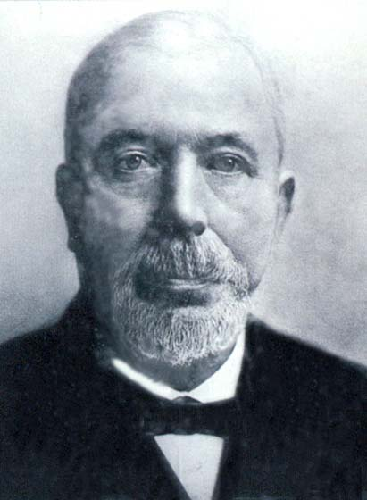
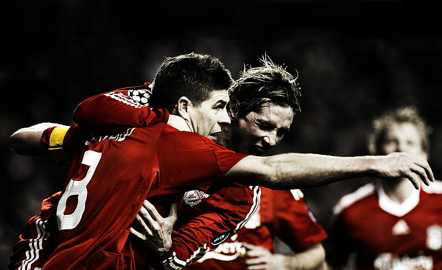

Liverpool were founded following a dispute between the Everton committee and John Houlding, club president and owner of the land at Anfield. After eight years at the stadium, Everton relocated to Goodison Park in 1892 and Houlding founded Liverpool F.C.
A fifth-place finish in the Premier League meant Liverpool were not guaranteed entry into the Champions League and faced the prospect of not being able to defend their European title.
